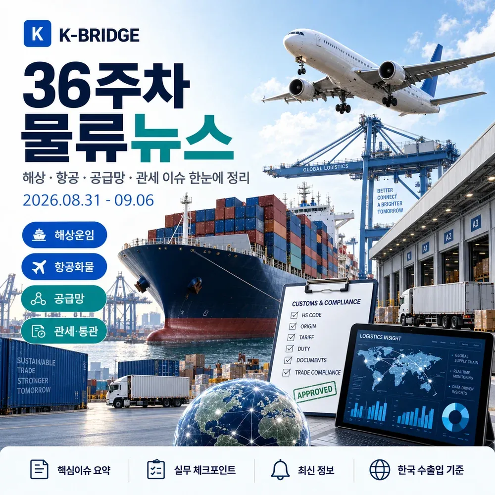
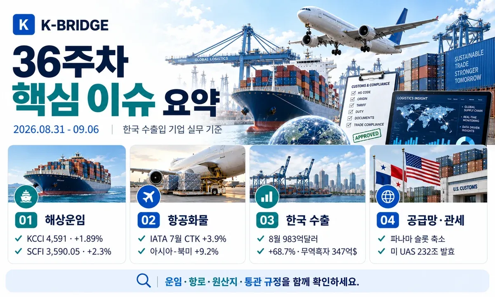
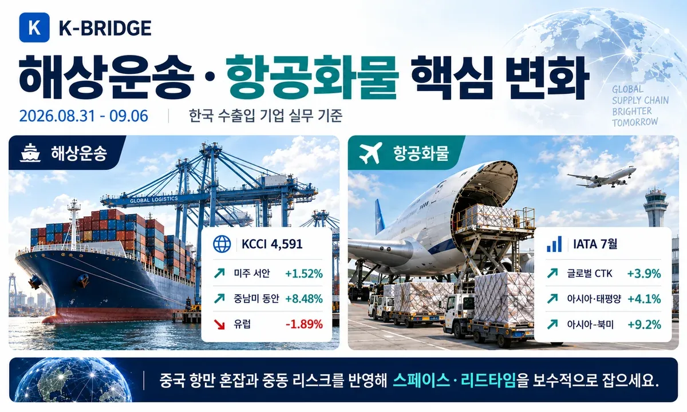
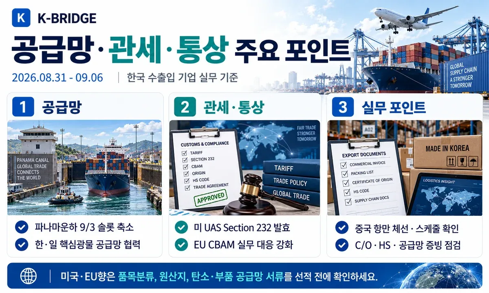
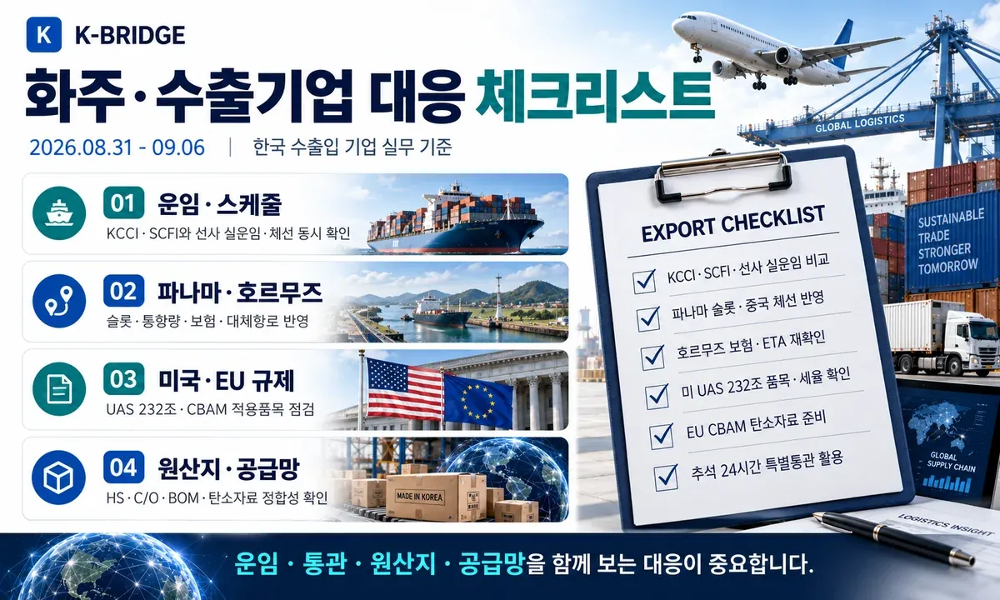

36주차 핵심 요약
KCCI는 4,591로 전주 대비 1.89% 상승했고, SCFI는 3,590.05로 전주 대비 약 2.3% 상승했습니다. 파나마운하는 강수 부족으로 9월 3일부터 일일 통항 슬롯을 34개로 조정했고, 호르무즈는 9월 3일 가시 통항이 4척으로 최근 10일 평균 15척을 크게 밑돌았습니다. 한국의 8월 수출은 983억달러(+68.7%)로 8월 기준 역대 최대를 기록했고, IATA 7월 항공화물 수요는 3.9% 증가했습니다. 미국 UAS Section 232는 9월 3일 발효됐으며, 한·일 공급망 파트너십과 EU CBAM 대응도 이번 주 핵심 통상 이슈입니다.

1. 36주차 시장 한눈에 보기
36주차는 해상운임 상승과 실제 운항 제약이 동시에 커진 주간입니다. KCCI와 SCFI가 나란히 상승했고, 파나마운하 슬롯 축소와 중국 항만 체선, 호르무즈 저통항이 선복의 실질적 가용성을 떨어뜨리고 있습니다. 항공화물은 성장세가 유지되지만 중동 연결 항로 약세와 높은 연료비를 함께 봐야 합니다.
| 지표 | 36주차 기준 | 변화 | 실무 해석 |
|---|---|---|---|
| KCCI | 4,591 | 8/31 · +1.89% | 미주·중동·중남미 상승, 유럽·지중해 하락 |
| SCFI | 3,590.05 | 9/4 · +2.3% | 중국 항만 체선과 공급 제약이 스팟운임 지지 |
| 한국 수출 | 983억달러 | 8월 · +68.7% | 8월 기준 역대 최대, 무역흑자 347억달러 |
| IATA 글로벌 CTK | +3.9% | 7월 전년 대비 | 아시아·태평양 +4.1%, 아시아-북미 +9.2% |
| 파나마운하 | 34 슬롯 | 9/3부터 | Neopanamax 9 + Panamax 25, 9/15 추가 축소 |
| 호르무즈 | 4척 | 9/3 · 10일 평균 15척 | 보험·ETA·대체 조달선 변동성 지속 |
2. 해상운송·글로벌 항로
KCCI 4,591 - 중남미 강세, 유럽·지중해 약세
한국해양진흥공사 기준 8월 31일 KCCI는 4,591로 전주 4,506 대비 85포인트, 1.89% 상승했습니다. 미주 서안 7,203(+1.52%), 미주 동안 10,482(+1.66%), 중동 8,625(+1.96%), 중남미 동안 7,755(+8.48%), 중남미 서안 6,653(+8.27%)로 올랐습니다. 반면 유럽은 4,515(-1.89%), 지중해는 5,273(-2.77%)로 하락했습니다.
SCFI 3,590.05 - 전주 대비 2.3% 상승
상하이해운거래소의 9월 4일 SCFI는 3,590.05로 전주 3,509.53보다 80.52포인트 상승했습니다. 중국 주요 항만의 태풍 후유증과 체선, 글로벌 선복 재배치가 단기 스팟운임을 지지하는 흐름입니다.
파나마운하 - 9월 3일부터 일일 슬롯 34개
파나마운하청은 강수 부족에 대응해 9월 3일부터 Neopanamax Locks 일일 슬롯을 9개, Panamax Locks를 25개로 조정했습니다. 9월 15일부터 Panamax는 23개로 추가 축소됩니다. 예약이 없는 선박의 대기시간이 늘 수 있어 미주 동안향 화물은 선사별 통항 예약과 ETA를 재확인해야 합니다.
호르무즈 통항 4척 - 최근 10일 평균 15척 크게 하회
Reuters가 Kpler 데이터를 인용한 9월 4일 보도에서 전날 호르무즈 해협을 통항한 가시 상품선은 4척으로 최근 10일 평균 15척보다 크게 적었습니다. 한국 정부도 항행 안전 지원을 위한 실질적 선택지를 검토하고 있다고 밝혀, 한국 수입기업의 에너지·석유화학 조달 리스크 관리가 더 중요해졌습니다.
상하이·닝보 체선 - 일부 터미널 7~9일 이상 대기
Kuehne+Nagel은 9월 5일 상하이와 닝보의 혼잡이 태풍과 누적 스케줄 지연으로 심화됐다고 전했습니다. 9월 1일 7일 평균 대기시간은 닝보 약 3.45일, 상하이 약 5.21일이었고, 일부 상하이 터미널의 대기시간은 9일을 넘었습니다. 중국발·중국 환적 화물은 컷오프와 연결선 일정을 보수적으로 잡아야 합니다.

3. 항공화물 시장
IATA 7월 항공화물 +3.9% - 아시아·북미 강세
IATA가 8월 31일 발표한 7월 글로벌 항공화물 수요(CTK)는 전년 대비 3.9%, 국제선은 4.7% 증가했습니다. 아시아·태평양 항공사는 4.1%, 아시아-북미 항로는 9.2%, 아시아 역내는 6.1% 성장했습니다. 반면 중동-아시아는 -14.1%, 유럽-중동은 -16.1%로 지정학 리스크의 영향이 이어졌습니다.
연료비 부담 확대 - 7월 제트연료 전년 대비 56.9% 상승
IATA에 따르면 7월 제트연료 가격은 전월 대비 12.2%, 전년 대비 56.9% 높았습니다. 항공화물 수요는 견조하지만 운임 하락을 제약하는 비용 요인이므로 긴급·고부가 화물은 운임뿐 아니라 유류할증료와 노선별 스페이스를 함께 비교해야 합니다.
4. 한국 수출·통관
8월 수출 983억달러 - 8월 기준 역대 최대
관세청 잠정치에서 2026년 8월 수출은 983억달러로 전년 대비 68.7% 증가했습니다. 수입은 635억달러(+22.5%), 무역수지는 347억달러 흑자를 기록했습니다. 수출 증가세가 강한 만큼 주요 항로의 선복·창고·내륙운송 용량도 함께 점검할 필요가 있습니다.
추석 특별통관지원 - 전국세관 24시간 지원팀 운영
관세청은 9월 4일 추석 특별지원대책을 발표했습니다. 농축수산물과 긴급 원부자재, 해외직구 특송물품의 신속통관을 위해 24시간 특별통관지원팀을 운영하고, 관세 납부기한 연장·분할납부 및 선 환급 후 심사 등 기업 자금부담 완화도 지원합니다.
한-인도네시아 EODES - 9월 5~6일 원산지증명서 송수신 일시 정지
관세청 FTA 포털은 인도네시아 측 시스템 유지보수로 9월 5일 23시부터 9월 6일 05시까지 양국 원산지증명서(C/O) 전자 송수신이 일시 정지된다고 안내했습니다. 작업 후 미전송 C/O는 자동 전송될 예정이지만, 주말 선적·수입신고 일정은 여유를 두는 것이 좋습니다.

5. 공급망·관세·통상
한·일 공급망 파트너십 - 핵심광물·자원 협력 본격화
산업통상부는 9월 2일 일본 도쿄에서 제1차 한·일 공급망 파트너십(SCPA) 이행 협의회를 열고 핵심광물·자원 공급망 협력과 글로벌 공조를 논의했습니다. 양국 제조업 공급망의 상호의존도가 높은 반도체·배터리·소재 기업에는 조달선 다변화와 공동 위기대응의 기반이 확대되는 흐름입니다.
EU CBAM - 실무 이행 규정 대응 강화
정부는 9월 2일 CBAM 대응 정부 합동설명회를 열어 이행 규정과 실무 대응방안을 안내했습니다. EU향 철강·알루미늄 등 대상 품목 수출기업은 품목분류, 배출량 데이터, 공급업체 자료와 신고체계를 함께 정비해야 합니다.
미국 UAS Section 232 - 9월 3일 발효
미국의 UAS·부품 Section 232 조치는 9월 3일부터 시행됐습니다. Annex I 대상 일부 UAS·도킹스테이션·핵심부품에는 100%, Annex II UAS에는 25%가 기본 조치입니다. 다만 한국산은 조건 충족 시 Column 1 관세를 포함한 총세율 15% 상한이 적용될 수 있으며, 핵심부품과 기술의 적격 원산지를 미국 수입자가 인증해야 합니다.
동아시아 태풍 시즌 - 항만·선박 스케줄 지연 장기화 가능성
Maersk는 9월 4일 동아시아의 연이은 태풍으로 항만 폐쇄, 선박 지연, 혼잡, 선복 제약의 파급효과가 지속되고 있다고 안내했습니다. 중국·동북아 환적을 이용하는 한국 화주는 선사별 포트 오미션과 로테이션 변경까지 함께 확인해야 합니다.

6. 화주·수출기업 대응 체크리스트
- 해상: KCCI·SCFI와 선사 실운임, 중국 항만 체선, 파나마운하 예약 여부를 함께 비교합니다.
- 호르무즈: 중동 연계 화물은 War Risk, 통항 가능성, ETA 버퍼, 대체 조달선을 항차별로 확인합니다.
- 항공: 아시아-북미 수요 강세와 높은 제트연료비를 반영해 긴급화물은 메인편과 대체편을 동시에 확보합니다.
- 미국: UAS Section 232는 HTS와 핵심부품·기술 원산지 인증 요건을 미국 수입자와 확인합니다.
- EU: CBAM 대상 품목은 HS 분류, 배출량 데이터, 공급업체 자료의 정합성을 선적 전 점검합니다.
- FTA: 전자 원산지증명서 시스템 점검·장애 시간을 고려해 신고일정에 여유를 둡니다.
- 국내 통관: 추석 성수기에는 관세청 24시간 특별통관지원과 납기·환급 지원을 활용합니다.
7. 자주 묻는 질문
Q. 2026년 36주차 KCCI는 얼마인가요?
Q. 파나마운하 제한은 미주 동안 선적에 바로 영향을 주나요?
Q. 한국산 UAS는 미국에서 모두 15%만 내면 되나요?
운임이 오를 때는 항로·통관·공급망을 함께 봐야 합니다
케이브릿지는 해상·항공·통관·국내운송을 연결해 선복과 운임뿐 아니라 파나마·호르무즈 리스크, 원산지·관세 조건과 도착일정까지 함께 검토합니다.